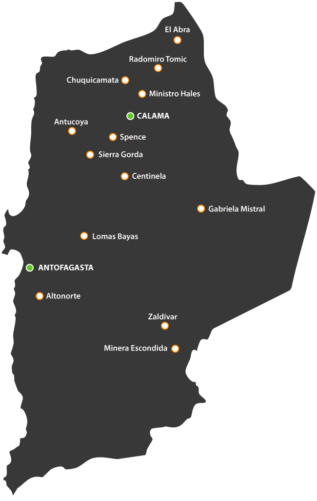

Chile produce 1 de cada 4 toneladas de cobre del mundo.
¿Cuánto cobre hay en tu casa? ¿Qué tan grande es un camión minero? ¿Quién usa más agua en Chile? Descúbrelo con desafíos, datos y preguntas a Gorito. Cada dato viene del libro Minería en Números del Consejo Minero.
toneladas de cobre producidas en Chile en 2024
del cobre del mundo sale de Chile: somos el 1º
del PIB de Chile es minería; más del 20% sumando su efecto en otros sectores
empresas chilenas son proveedoras de la minería
¿Cuánto crees?
Mueve el control hasta tu respuesta y revisa qué tan cerca quedaste. Mientras más cerca, más puntos.
Tu resultado aparecerá aquí.
Datos por tema
Toca una tarjeta para marcarla como vista y ganar puntos. ¿Te quedaste con dudas? Pregúntale a Gorito.
Gigantes de la minería
Todo dibujado a la misma escala, junto a lugares conocidos de la región. Toca cada gigante para compararlo con una persona.
Escala: cada línea horizontal = 20 m. La Estatua de la Libertad se dibuja sin pedestal (46 m); con pedestal mide 93 m. 📍 = referencias de la Región de Antofagasta (no vienen del libro; la fuente está en cada ficha).
de túneles tiene El Teniente, la mina subterránea más grande del mundo. En línea recta, es casi como ir de Santiago a Lima.
Codelco · p.61
mide el rajo de Chuquicamata, con 800 m de profundidad. Llegó a ser el más grande del mundo.
Codelco · p.60
es la altura de Caserones, el yacimiento a mayor altitud según el libro.
Lundin Mining · p.63
El cobre en tu vida
El cobre conduce la electricidad, resiste más de 1.000 °C y se puede reciclar al 100%. Por eso está en casi todo.
¿Cuánto cobre lleva un vehículo?
Elige uno. Cada cuadrito equivale a 5 kg.
ICA · p.91
¿En qué se usa el cobre?
Distribución de usos a nivel mundial.
Wood Mackenzie, IWCC, ICA · p.34
de cobre hay en una casa, el doble que hace 40 años.
Codelco · p.86
minerales distintos necesita un teléfono.
Minerals Council of Australia · p.87
de cobre requiere una turbina eólica de 3 MW.
Banco Mundial · p.84
de infecciones hospitalarias con cobre antimicrobiano.
Antimicrobial Copper · p.89
Agua y energía
Un mito muy común es que la minería es la que más agua usa en Chile. ¿Tú qué crees?
¿Qué sector usa más agua en Chile?
DGA · p.79
Cada vez más agua de mar
Hoy el 36% del agua de la minería viene del mar, desalada o no. Al 2034 llegaría al 70%.
del agua de los procesos mineros se recircula.
Cochilco · p.81
desaladoras operando y en proyecto.
Cochilco · p.83
de electricidad renovable en la minería, proyectado al 2030.
Política Nacional Minera 2050 · p.75
de la electricidad del país la consume la minería.
Cochilco · p.74
Región de Antofagasta
Aquí está Escondida, la mina que más cobre produce en el mundo. Explora el mapa: producción 2024 por faena, en miles de toneladas de cobre fino.

Toca un punto: su tamaño indica cuánto cobre produjo en 2024. Mapa: EMRA.
del PIB de la Región de Antofagasta lo aporta la minería.
Banco Central · p.17
empresas tecnológicas proveedoras de la minería hay en la región, más que en cualquier otra.
Fundación Chile · p.67
personas que trabajan en minería viven en la región donde trabajan.
CCM-Eleva · p.54
¿Cuánto aprendiste?
8 preguntas al azar. Responde sin apuro y gana tu medalla de minero.
Pregúntale a Gorito
Gorito conoce todos los datos del libro Minería en Números y te dice de dónde viene cada uno.